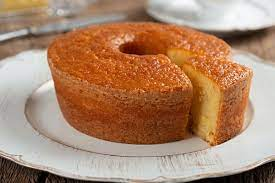

3 ovos
2 xícaras (chá) de açúcar
2 xícaras (chá) de fubá
3 colheres (sopa) rasas de farinha de trigo
1/2 copo (americano) de óleo
1 copo de leite
1 colher (sopa) de fermento em pó
Bata todos os ingredientes no liquidificador.
Coloque em uma forma untada e enfarinhada.
Leve ao forno preaquecido e deixe assar, por cerca de 40 minutos.
